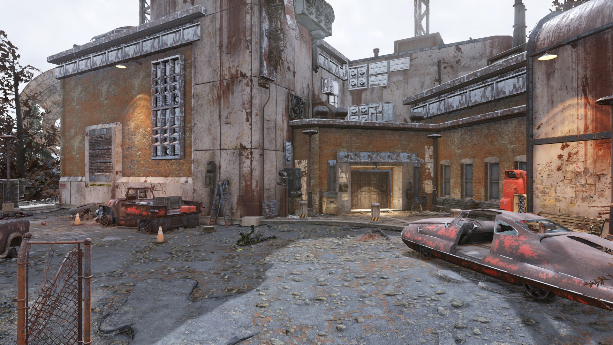
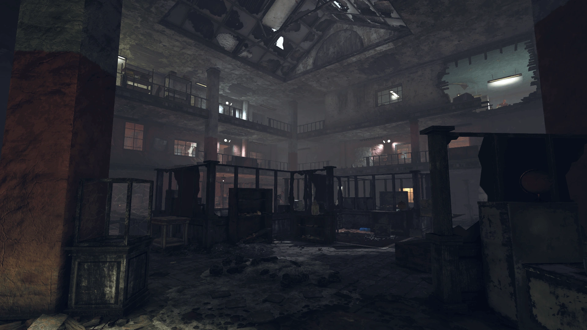
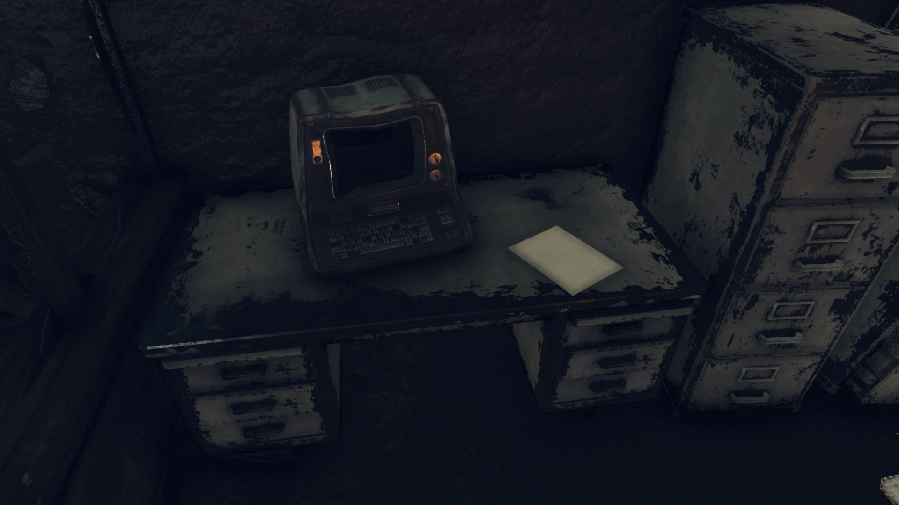
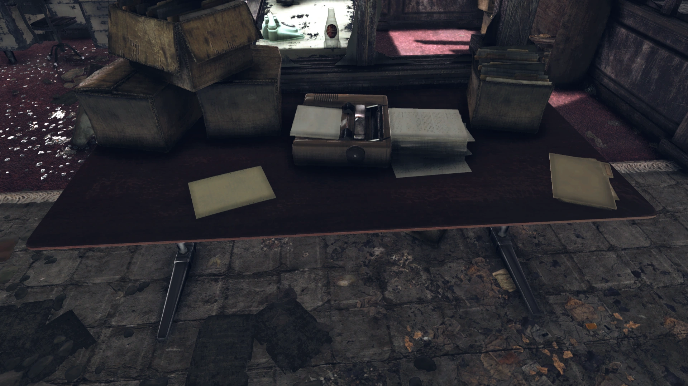
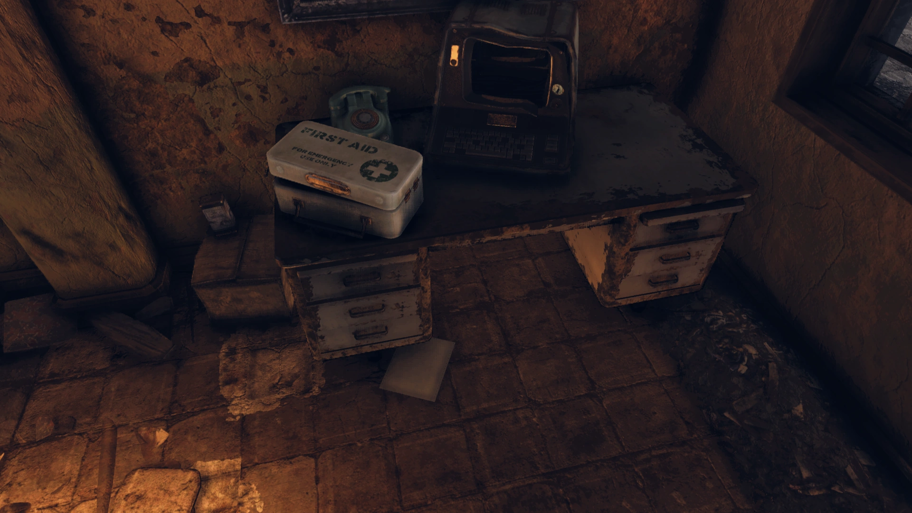
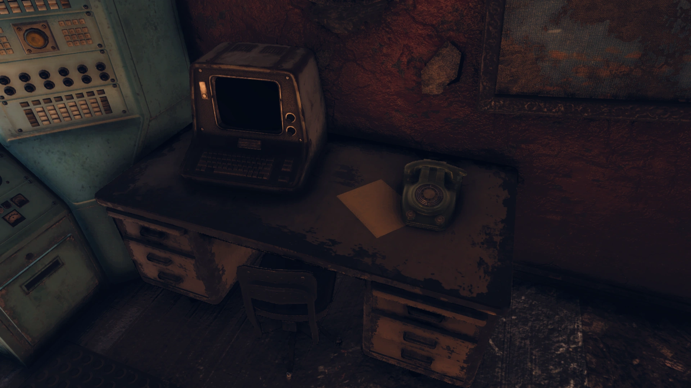
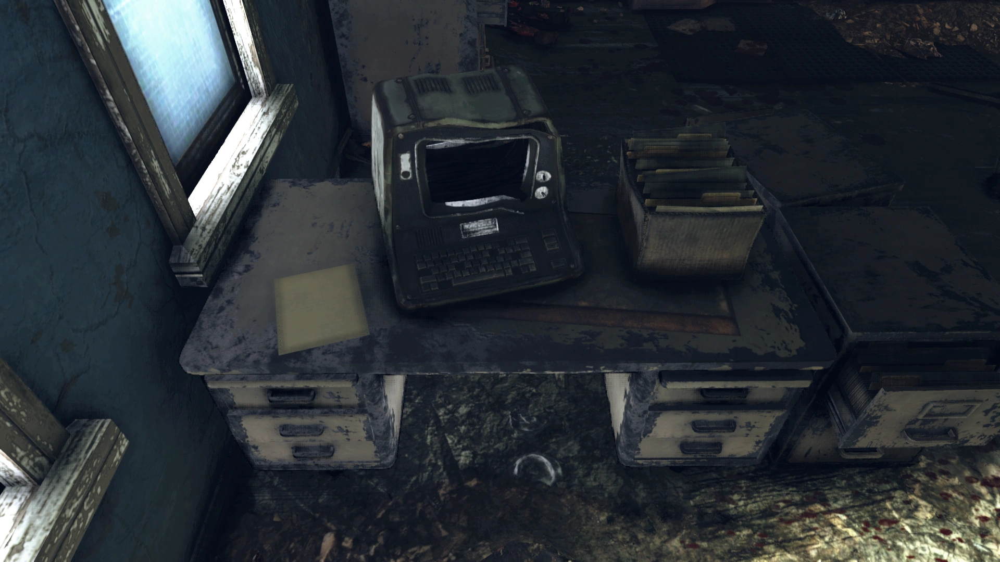
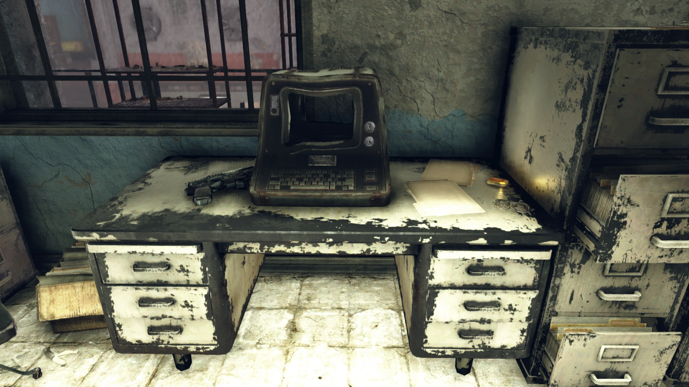

National Radio Astronomy Research Center
国立電波天文学研究センター
概要
国立電波天文学研究センター（NRARC）は、アパラチアの荒れた境域に位置するロケーション。
背景
NRARCは、国立隔離電波アレイ（NIRA）を含む深宇宙電波研究複合施設の一部として建設された研究センターだった。
研究センターは作戦の中心で、深宇宙信号の調査を任務としていた。
NIRAの周波数相殺作業による事故を除けば、プロジェクト全体は2077年9月まで順調に推移していた。
2077年9月3日午後のテストはクリーンな信号を受信し、重要なデータを獲得した。
しかし天文学者たちは、電波信号にほぼ即座に異星人の異常を発見した。
すべての深宇宙データは直ちに最高機密および国家安全保障上の懸念事項に指定された。
NRARCの職員は沈黙を命じられ、プロジェクトに関連する一切の議論を禁止された。
クリス・マーフィーやジョナサン・ワジョフスキのような信号について話しすぎた従業員は特定され、情報漏洩防止のために「退職」させられた。
7年間一度も退職者がいなかったのに、突如2週間で6人が退職し、全員が比較的若く、全員が家族のもとへ行くために辺鄙な場所に引っ越したとされた。
クリス・マーフィーに至っては、存命の家族がいないはずだった。
この不自然な失踪は研究チームにも認識されていたが、状況がいかに奇妙に見えようと、誰も推測しようとはしなかった。
ある時点で、研究チームは緊急命令A19を受け、サイトで収集した全証拠の破壊を命じられた。
2102年時点で残された証拠から判断すると、彼らは破壊に失敗したようだ。
レイアウト
NIRAの東方すぐの場所に位置する研究センターは、ほぼ放棄されているが、調査に値する場所がいくつかある。
メインビルは3つの主要フロアで構成されている。
1階にはオープンプランのオフィスが1つあり、2階と3階には1階を見下ろすバルコニーがある。
各階にはデスクとファイルキャビネットのあるオフィスがあり、時折ロックされた金庫もある。
1階には前述のオフィスと多数のオフィス用品（タイプライターなど）がある。
南壁にはロックされた経理室で、中にロックされた金庫がある。
西側にはキッチンと休憩室、廊下の先に財務記録室とラウンジがある。
2階は北東の階段室からアクセスでき、エグゼクティブオフィス、会議室、アクセス可能なターミナル付きのデータレビュー室がある。
3階は屋上への出口（One of Usクエスト中にMODUSをコバック・マルドゥーン・プラットフォームにアップリンクする場所）の他、金庫付きのメンテナンスオフィス、会議＆通信室、金庫付きのファイリングルームがある。
施設の地下室は、1階西側廊下の階段室からアクセスできる（財務記録室とラウンジの奥）。
あるいは3階から西側の扉を通って到達可能。
大型コンソールルームがあり、西へ続く廊下と階段がある。
壁と床の崩落部分が大きな穴を作り、このレベルの発電機室に通じている。
フュージョンコアが見つかることがある。
地下室にはスチーマートランクとアーマー作業台がある。
注目アイテム
- EMERGENCY ORDER A19（メモ×5枚） — 施設各所に配置
- Something's up（ホロテープ） — 3階のオフィスの机
- 研究センターの鍵 — 3階、上記ホロテープと同じ机（1階のドアを開ける）
- Vault-Tecボブルヘッド — 2ヶ所（地下室アーマー作業台付近、3階メンテナンス室）
- フュージョンコア — 地下室のフュージョンジェネレーター内
施設内の5ヶ所に配置されているメモ。
深宇宙信号から発見された異星人の異常に関する全証拠の即時破壊を命じる緊急命令。
4枚目のメモには右下に手書きのコメントが追加されている。
📍 1階北東角の机、1階プリンター横、ロックされたオフィス内、2階データレビューターミナル横、3階通信ターミナル横
ホロテープ
ジョナサン・ワジョフスキ：ここで変なことが起きてるんだ。
男性：何の話だ？
ジョナサン：インターンシップ始めたばかりだけど、この場所は何かおかしいって分かるんだ。
男性：例えば？
ジョナサン：正社員の何人かがとんでもない話をしてるのを聞いたんだ。それ……待て、録音してるのか？ 何やってんだよ？ 何が起きてるんだ？
男性：黙って自分の研究をしろと言われたはずだ、ジョナサン。
ジョナサン：待て……あの人たちは誰だ？
男性の声（粗い口調）：一緒に来てもらう必要がある、ジョナサン。
📍 3階のオフィスの机
ターミナルエントリ
データレビューターミナル
8-17-77 1:44 PM
送信者：L.マイヤーズ
件名：衛星調整
間もなく衛星のリモート調整を行う予定で、データに空白が生じるだろう。
前回のように心配しないでほしくて、事前にお知らせする。
戦争で全員が神経質になっているが、私の知る限り、低軌道宇宙で外国の武装勢力が我々の機器を改ざんしているということはない。
8-27-77 3:24 PM
送信者：M.ハーディ
件名：深宇宙ログ
ルシウスが月曜の朝のミーティングまでに次のバッチのログのレビューを求めている。
週末を台無しにして申し訳ないが、この情報を収集できるウインドウは限られているので、次のテスト前にデータの精査を終え、必要な調整を行って先に進む必要がある。
9-3-77 9:16 AM
送信者：M.ハーディ
件名：受信データ一括ダンプ
お知らせ！
今日の午後早い時間に大規模テストが予定されている。
国立隔離電波アレイのチームは校正を完了し、待機中だ。
ルシウスによると、今回はこれまでで最もクリーンな信号が得られるかもしれないとのことなので、大量のデータが来る準備をしておいてくれ。
9-21-77 4:01 PM
送信者：C.マーフィー
件名：何かが変だ
変だよな？
話すなと言われたのは分かってるけど……俺だけじゃないよな？
永遠に秘密にできるわけがない。
あれ以来、眠れていない。
マイケルには業績が落ちているのを気付かれていると思うが、最近みんな少し変な様子に見えるんだ。上の連中でさえも。
心配しすぎかもしれない。
何でもないのかもしれない。
でもお前はデータをレビューしてたよな、どう思う？
9-21-77 4:37 PM
送信者：D.ディヴィルジリオ
件名：セキュリティ通知
自身のクリアランスレベルより下の者に機密情報について通信した従業員は、即時解雇し、連邦法の最大限の範囲で訴追する。
自分のコミュニケーションがこの命令に従っているか確信が持てない場合は、安全を期して一切何も言わないこと。
この施設を安全で安心な職場にするためのご協力に感謝する。
10-01-77 12:08 PM
送信者：P.チャップマン
件名：退職？
きっと何でもないことだろう。
7年間一度も退職者がいなかったのに、突然2週間で6人が退職し、全員比較的若く、全員が家族のもとへ行くために辺鄙な場所に引っ越した？
クリス・マーフィーに至っては、存命の家族がいないはずなのに。
まあ、あり得ない話ではない。
別に変なことがあるなんて思ってもいない。
オフィスの外で誰かに言うようなことでは断じてない。
退職したくはないからな、確かに。
登場作品
国立電波天文学研究センターはFallout 76にのみ登場します。
ギャラリー








国立電波天文学研究センター——Falloutシリーズのファンなら「ゼータン」の名を聞くだけでニヤリとする場所です。
このロケーションの恐ろしさは、宇宙人がいるということよりも「宇宙人の存在に気づいた人間がどう処理されるか」を描いている点にあります。
ターミナルの時系列を追うと背筋が凍ります。
8月17日：衛星調整の定常連絡。
9月3日：「史上最もクリーンな信号」の期待。
9月21日：クリス・マーフィーの「変だよな？ 眠れないんだ」という不安メール。
同日：セキュリティ部門からの「黙れ、さもなくば」という冷徹な通告。
10月1日：「7年間退職者ゼロ→2週間で6人退職。存命の家族がいないはずのマーフィーも家族のもとへ？」
そしてP.チャップマンの「退職したくはないからな、確かに」という恐怖を滲ませた一文。
ホロテープ「Something's up」では、インターンのジョナサンが異変に気づいた瞬間、同僚が録音を始め、見知らぬ男たちが「一緒に来てもらう」と現れる。
声のトーンの変化だけで語られる恐怖は、Falloutのオーディオログの中でも秀逸です。
> COMMENTS_